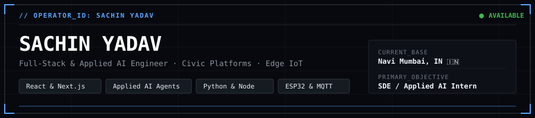
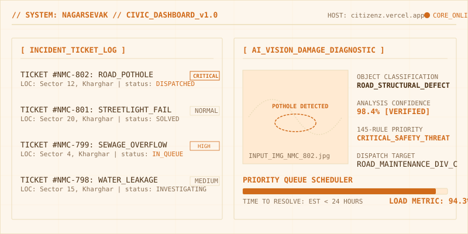
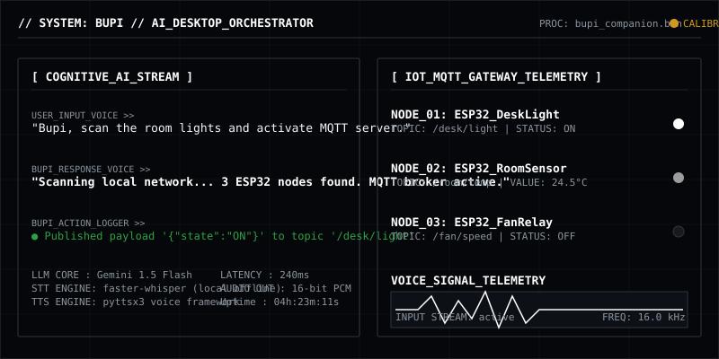
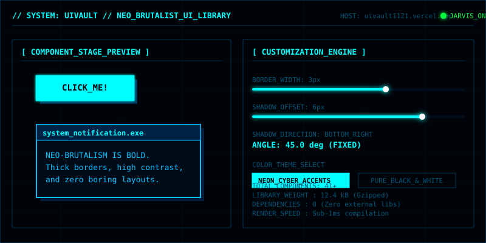
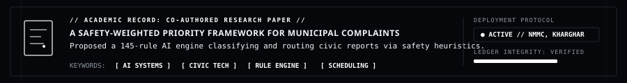

<!DOCTYPE html>
<html lang="en">
<head>
  <meta charset="UTF-8" />
  <meta name="viewport" content="width=device-width, initial-scale=1.0" />
  <title>GitHub Profile Preview — Sachin Yadav</title>
  <link rel="stylesheet" href="https://cdnjs.cloudflare.com/ajax/libs/github-markdown-css/5.5.1/github-markdown.min.css" />
  <style>
    body {
      background-color: #0d1117;
      color: #c9d1d9;
      font-family: -apple-system, BlinkMacSystemFont, "Segoe UI", Helvetica, Arial, sans-serif;
      padding: 32px 16px;
      margin: 0;
      display: flex;
      justify-content: center;
    }
    .markdown-body {
      box-sizing: border-box;
      min-width: 200px;
      max-width: 896px;
      margin: 0 auto;
      padding: 32px 40px;
      background-color: #0d1117;
      color: #e6edf3;
      border: 1px solid #30363d;
      border-radius: 6px;
    }
    @media (max-width: 767px) {
      .markdown-body {
        padding: 16px;
      }
    }
  </style>
</head>
<body>
  <article class="markdown-body" id="content">
    <!-- Rendered Markdown will appear here -->
  </article>

  <script src="https://cdn.jsdelivr.net/npm/marked/marked.min.js"></script>
  <script>
    const markdown = `<div align="center">

  

  <br/><br/>

  <a href="https://drive.google.com/file/d/1GVTR3I-cbCKU3Ex_9El_jnJTHi6mIQ7I/view?usp=sharing">
    
  </a>
  &nbsp;
  <a href="https://www.linkedin.com/in/sachinyadav1121">
    
  </a>
  &nbsp;
  <a href="https://sachin-0.vercel.app/">
    
  </a>
  &nbsp;
  <a href="https://github.com/bunnybot1121">
    
  </a>
  &nbsp;
  <a href="mailto:Sachinyadav402107@gmail.com">
    
  </a>

</div>

<br/>

---

### ⚡ System Overview

\`\`\`yaml
operator:
  name     : Sachin Yadav
  role     : Full-Stack & Applied AI Engineer
  base     : Navi Mumbai, India 🇮🇳
  education: Computer Engineering Undergraduate @ Saraswati College of Engineering
  status   : Open for SDE & Applied AI Internships (Summer 2025/2026)

focus_areas:
  - Civic Platforms & Municipal Dispatch Automation
  - Full-Stack Web Architectures (React / Supabase / Next.js)
  - Edge Speech & Physical AI Companions (Gemini / Whisper / ESP32)
  - Heuristic Priority Systems & Algorithmic Triage
\`\`\`

---

### 🚀 Featured Systems & Deployments

#### 01. [NagarSevak — AI Municipal Dispatch & Civic Platform](https://citizenz.vercel.app/login)
> Production-grade multi-role municipal incident triage and workforce scheduling platform designed for local government operations.

* **Architecture:** Three role-segregated portals built to handle end-to-end incident lifecycles: citizen submission, administrative oversight, and field technician work orders.
* **Intelligent Triage:** Automated damage classification via **Gemini Vision API** paired with a proprietary **145-rule safety-weighted priority scheduler** balancing public hazard risks against resource availability.
* **Stack:** \`React\` · \`Supabase\` · \`PostgreSQL\` · \`Gemini Vision API\` · \`Node.js\` · \`Vercel\`
* **Direct Links:** [Citizen Portal](https://citizenz.vercel.app/login) · [Admin Dashboard](https://rnunicipal.vercel.app/login) · [Field Staff Portal](https://fieldstaff.vercel.app/) · [Codebase](https://github.com/bunnybot1121)

<br/>



<br/><br/>

---

#### 02. [Bupi — Desktop AI Companion & IoT Device Orchestrator](https://github.com/bunnybot1121)
> Low-latency physical companion system integrating real-time voice assistance with hardware actuation.

* **Voice Pipeline:** Sub-second local speech-to-text processing using \`faster-whisper\` coupled with natural neural text-to-speech synthesis (\`pyttsx3\`).
* **Hardware Telemetry:** Asynchronous event bus linking LLM tool calls (Gemini 1.5 Flash) directly to physical ESP32 microcontrollers over real-time **MQTT** message queues.
* **Stack:** \`Python\` · \`PyQt6\` · \`faster-whisper\` · \`Gemini 1.5 Flash\` · \`ESP32\` · \`MQTT\`
* **Direct Links:** [Codebase & Hardware Specs](https://github.com/bunnybot1121)

<br/>



<br/><br/>

---

#### 03. [UIVault — Neo-Brutalist Component Library](https://uivault1121.vercel.app/)
> High-contrast, zero-dependency component library designed to help developers build distinctive web interfaces.

* **Design Engineering:** **41+ modular components** implemented with 100% vanilla web primitives without heavy JavaScript runtime dependencies.
* **Accessibility & Performance:** Complete keyboard navigation support, high-contrast WCAG ratios, and responsive touch layouts across all breakpoints.
* **Stack:** \`HTML5\` · \`CSS3\` · \`Vanilla JavaScript\` · \`Vercel\`
* **Direct Links:** [Live Component Showcase](https://uivault1121.vercel.app/) · [Codebase](https://github.com/bunnybot1121)

<br/>



<br/><br/>

---

### 🔬 Research & Publications



* **"145-Rule Safety-Weighted AI Priority Framework for Municipal Complaints"**  
  *Co-Author* · Algorithmic prioritization system integrating computer vision and heuristic weight matrices to optimize municipal work-order routing based on physical danger severity.

---

### 🛠️ Technical Arsenal

<div align="center">

  
  
  <br/><br/>

  

  <br/><br/>

  

  <br/><br/>

  

  <br/><br/>

  

</div>

---

<div align="center">
  <sub>Engineered with precision · Tested in production · Built in Navi Mumbai 🇮🇳</sub>
</div>
`;

    document.getElementById('content').innerHTML = marked.parse(markdown);
  </script>
</body>
</html>
